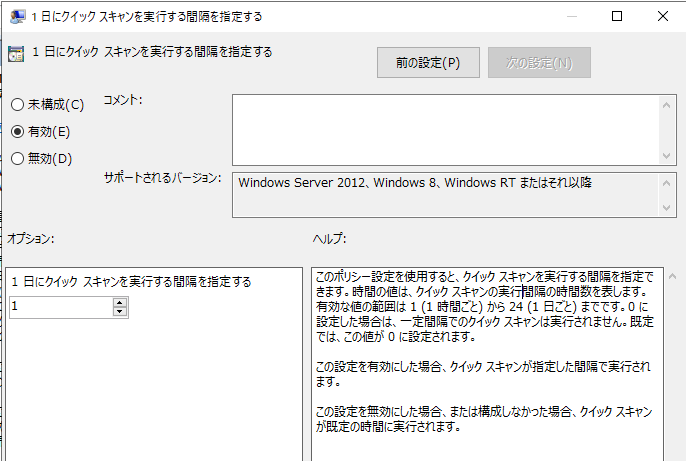

こんにちは Azure Security サポートチームです。
この記事では Microsoft Defender ウイルス対策(MDAV) のスケジュールスキャンについてまとめます。
スケジュールスキャンを構成する際の参考情報としてご利用ください。
※ 本記事の内容は 2023年 2月 28 日時点で最新の Windows 10 22H2 環境で動作確認を実施しています。
本記事の内容
- MDAV のスケジュールスキャン設定について
- グループポリシーを使用してスケジュールスキャンを構成する
- Intune を使用してスケジュールスキャンを構成する
- スケジュールスキャンの設定と実行履歴を確認する
- スケジュールスキャンに関するよくあるお問い合わせ
- まとめ
MDAV のスケジュールスキャン設定について
MDAV はスケジュール設定に基づいて定期的なウイルススキャンを実行することができます。
ユーザは、スケジュール設定に基づいて実行されるスキャンの種類や実行タイミングを構成することができます。
スケジュールスキャンの設定には、グループポリシーや Intune、Power Shell コマンドレットなどを使用することが可能です。
参考情報：Microsoft Defender ウイルス対策を使用して定期的なクイック スキャンとフル スキャンをスケジュールする | Microsoft Learn
設定可能なスケジュールスキャンの種類について
MDAV で設定可能なスケジュールスキャンは、大きく以下の 2 つに分類されます。
- クイックスキャン：マルウェアが登録されている可能性のある対象をスキャンします
- フルスキャン：端末にマウントされているドライブ内のすべてのファイルをスキャンします
スキャンの種類に関する詳細な情報については以下の公開情報を参照してください。
参考情報：クイック スキャン、フル スキャン、カスタム スキャン | Microsoft Learn
グループポリシーや Intune を使用してスケジュールスキャンを構成する場合、ユーザは任意のスキャンの種類を指定することができます。
ただし、MDAV のスケジュールスキャン設定項目には以下の 2 つが存在しているため、それぞれの設定項目について事前に確認しておく必要があります。
スケジュールされたクイックスキャンまたはフルスキャンに関する設定
スケジュールされたクイックスキャンに関する設定
[1] の設定では、クイックスキャンまたはフルスキャンのスケジュール設定を行うことが可能です。
一方で、[2] の設定ではクイックスキャンのスケジュール設定を構成できます。
上記の 2 つの設定は同時に構成することが可能であり、例えば [1] の設定にてフルスキャンを毎週日曜日の深夜にスケジュールしつつ、[2] の設定にてクイックスキャンを毎日実行させるような運用が可能です。
設定方法の詳細については以下の項目を参照してください。
参考情報：グループポリシーを使用してスケジュールスキャンを構成する
参考情報：Intune を使用してスケジュールスキャンを構成する
スケジュールスキャンに関するその他の留意点について
- スケジュールスキャンの開始時刻に関する留意点
Windows マシンでは、既定で以下の設定がそれぞれ有効化されています。
- スケジュールされたタスクの実行時間をランダム化する
- コンピュータのアイドル時にスケジュールされたタスクを実行する
上記の設定が有効な場合、ユーザが構成したスケジュールスキャンが指定の時刻ちょうどに開始されない場合があります。
スケジュールされたタスクの実行時間をランダム化することやコンピュータのアイドル時にタスクを実行することは、帯域負荷の軽減などのパフォーマンスの上のメリットがありますが、スケジュールスキャンを指定の時刻ちょうどに開始する必要がある場合には、上記の 2 つの設定を無効化します。
各設定を無効化してスケジュールスキャンを指定の時刻ちょうどに開始する方法については以下の内容を参照してください。
参考情報：Q1 設定した時刻にスケジュールスキャンが開始されません
- フルスキャンを実行する場合のパフォーマンス影響に関する留意点
スケジュールされたスキャンを構成してフルスキャンを実施する場合、スキャンの頻度や対象、スキャン時のパフォーマンス影響について留意する必要があります。
詳細については以下の項目を参照してください。
参考情報：Q2 スケジュールされたフルスキャンの実行時に CPU 使用率が高騰します
参考情報：Q3 フルスキャンでネットワークドライブはスキャンされますか
- スケジュールスキャン設定の競合に関する留意点
スケジュールスキャンの設定はグループポリシーや Intune など、複数の管理ツールで構成することが可能です。
しかし、複数の管理ツールからスケジュールスキャンの設定を行う場合、設定が競合し意図しない動作となる可能性があります。
そのため、複数の管理ツールを用いてスケジュールスキャンの設定を行う場合は、重複する設定が配信されないようにご留意ください。
グループポリシーを使用してスケジュールスキャンを構成する
Windows マシンでスケジュールスキャンを構成する場合、GPOもしくはローカルグループポリシーにて、**[管理用テンプレート]>[Windows コンポーネント]>[Microsoft Defender ウイルス対策]>[スキャン]** 配下の設定を変更します。
※ Windows Server 2016 の場合は、[Microsoft Defender ウイルス対策]ではなく[Endpoint Protection]の設定を変更します。
一般的によく使用される設定項目について以下に記載します。
なお、グループポリシーを使用してスケジュールスキャンを構成する方法の詳細については、以下の公開情報の記載を参照してください。
参考情報：グループ ポリシーを使用してウイルス対策スキャンをスケジュールする | Microsoft Learn
クイックスキャンをスケジュールする
クイックスキャンの実行をスケジュールする場合、ユーザは以下の 3 つの設定を使用することができます。
これらの 3 つの設定は同時に構成することも可能です。
詳細については、各設定項目の記載を参照してください。
フルスキャンをスケジュールする
フルスキャンの実行をスケジュールする場合、ユーザは以下の設定を使用することができます。
また、上記の設定は以下のクイックスキャンの設定と同時に構成することも可能です。
詳細については、各設定項目の記載を参照してください。
スケジュールスキャンに使用するスキャンの種類を変更する
スケジュールスキャンに使用する「スキャンの種類」を変更する場合、[スキャン]>[スケジュールされたスキャンに使用するスキャンの種類を指定する] を [有効] に変更し、「クイックスキャン」または「フルシステムスキャン」のいずれかを選択します。
スケジュールスキャンの実行日時を変更する
スケジュールスキャンの実行日時を変更する場合、以下の 2 つの設定を変更します。
[スキャン]>[スケジュールされたスキャンを実行する曜日を指定する]
[スキャン]>[スケジュールされたスキャンを実行する時刻を指定する]
特に、[スケジュールされたスキャンを実行する曜日を指定する] には既定で [(0x8) 実行しない] が設定されているため、この設定を用いてスケジュールスキャンを構成する場合は必ず変更する必要があります。
また、スケジュールスキャンの時刻については午前 0 時からの分数でスケジュールされます。
120 が設定された場合は午前 2 時、780 が設定された場合は午後 1 時のようにスケジュールを設定できます。
詳細な設定方法については 以下の公開情報を参照してください。
参考情報：スキャンのスケジュール設定 | Microsoft Learn
毎日のクイックスキャンの時刻を指定する
スケジュールされたクイックスキャンを設定する場合、[スキャン]>[毎日のクイックスキャンの時刻を指定する] の設定を使用することができます。
この設定では、午前 0 時からの分数でスケジュールを構成できます。
120 が設定された場合は午前 2 時、780 が設定された場合は午後 1 時のようにスケジュールを設定できます。
詳細な設定方法については 以下の公開情報を参照してください。
参考情報：毎日のスキャンをスケジュールするためのグループ ポリシー設定 | Microsoft Learn
1 日にクイックスキャンを実行する間隔を指定する
1 日に実行するクイックスキャンの間隔を設定する場合、[スキャン]>[1 日にクイックスキャンを実行する間隔を指定する] の設定を使用することができます。
この設定は [スケジュールされたスキャンを実行する時刻を指定する] や [毎日のクイックスキャンの時刻を指定する] の設定と同時に構成することが可能です。
この設定では、1 日のクイックスキャンの実行間隔を 1 時間から 24 時間の範囲で設定できます。

この設定でスケジュールされたクイックスキャンは、起点となるスケジュールスキャンが実行されてからの間隔でトリガーされます。
起点となるクイックスキャンは、例えば [1 日にクイックスキャンを実行する間隔を指定する] の設定を変更した直後や、シャットダウンされていた端末を起動したタイミングなどで実行される場合があります。
詳細な設定方法については 以下の公開情報を参照してください。
参考情報：毎日のスキャンをスケジュールするためのグループ ポリシー設定 | Microsoft Learn
Intune を使用してスケジュールスキャンを構成する
Intune からスケジュールスキャンの開始時刻を設定する場合、**[エンドポイントセキュリティ]>[ウイルス対策] から作成可能な [Microsoft Defender ウイルス対策] ポリシー**や、構成プロファイルから作成可能な [管理用テンプレート] ポリシーを使用することが可能です。
[管理用テンプレート] ポリシーを利用する場合は、グループポリシーを使用してスケジュールスキャンを構成するの記載を参照し、対応するポリシーを構成します。
[Microsoft Defender ウイルス対策] ポリシーを使用する場合は、以下の項目を参照してください。
※ [Microsoft Defender ウイルス対策] ポリシーを構成する場合、プラットフォームは [Windows 10、Windows 11、Windows Server] を選択します。
参考情報：Microsoft Intuneでエンドポイント セキュリティ ポリシーを使用してウイルス対策設定を管理する | Microsoft Learn
Intune でクイックスキャンをスケジュールする
Intune からクイックスキャンをスケジュールする場合、[Microsoft Defender ウイルス対策] ポリシーの以下の設定を使用することが可能です。
上記の設定は同時に構成することが可能です。
Intune でフルスキャンをスケジュールする
Intune からクイックスキャンをスケジュールする場合、[Microsoft Defender ウイルス対策] ポリシーの以下の設定を使用することが可能です。
上記の設定は、クイック スキャンの実行時刻をスケジュールすると同時に構成することが可能です。
スキャンの種類と実行時刻を構成する
Intune の [Microsoft Defender ウイルス対策] ポリシーを使用してクイックスキャンもしくはフルスキャンを構成する場合、以下の設定を変更します。
- スキャンパラメーター(ScanParameter)
- スキャンの実行日をスケジュールする(ScheduleScanDay)
- スキャンの実行時刻をスケジュールする(ScheduleScanTime)
例えば、以下は毎日午前 2 時にフルスキャンの実行をスケジュールするポリシーの例です。
スキャンパラメーター(ScanParameter)の設定はクイックスキャンまたはフルスキャンのいずれかを選択することが可能です。
各設定項目の詳細については、以下の公開情報を参照してください。
参考情報：Defender Policy CSP - Windows Client Management | Microsoft Learn
クイック スキャンの実行時刻をスケジュールする
Intune の [Microsoft Defender ウイルス対策] ポリシーを使用してクイックスキャンを構成する場合、以下の設定を変更します。
- クイックスキャンの実行時刻のスケジュール(ScheduleQuickScanTime)
例えば、以下は毎日午前 2 時にクイックスキャンの実行をスケジュールするポリシーの例です。
この設定は、スキャンの種類と実行時刻を構成するで構成したクイックスキャンまたはフルスキャンの設定と同時に構成することができます。
設定項目の詳細については、以下の公開情報を参照してください。
参考情報：Defender Policy CSP - Windows Client Management | Microsoft Learn
スケジュールスキャンの設定と実行履歴を確認する
端末にスケジュールスキャンの設定が適用されていることを確認する
MDAV が稼働する Windows マシンで Power Shell を起動してGet-MpPreferenceコマンドレットを実行することで、端末に適用されているスケジュールスキャンの設定を確認することが可能です。
各設定項目と出力結果の対応について以下に記載します。
- グループポリシーを使用してスケジュールスキャンを構成する場合
| Get-MpPreference | グループポリシーの設定項目 |
|---|---|
| ScanParameters | スケジュールされたスキャンに使用するスキャンの種類を指定する |
| ScanScheduleTime | スケジュールされたスキャンを実行する時刻を指定する(24 時間表記) |
| ScanScheduleOffset | スケジュールされたスキャンを実行する時刻を指定する(分数) |
| ScanScheduleDay | スケジュールされたスキャンを実行する曜日を指定する |
| ScanScheduleQuickScanTime | 毎日のクイックスキャンの時刻を指定する |
※ [1 日にクイックスキャンを実行する間隔を指定する] の設定値はGet-MpPreferenceコマンドレットの出力結果に含まれませんが、 レジストリキー [HKEY_LOCAL_MACHINE\SOFTWARE\Policies\Microsoft\Windows Defender\Scan\QuickScanInterval] から設定値を確認できます。
- Intune を使用してスケジュールスキャンを構成する場合
| Get-MpPreference | Intune ポリシーの設定項目 |
|---|---|
| ScanParameters | スキャンパラメーター |
| ScanScheduleTime | スキャンの実行時刻をスケジュールする(24 時間表記) |
| ScanScheduleTime | スキャンの実行時刻をスケジュールする(分数) |
| ScanScheduleDay | スキャンの実行日をスケジュールする |
| ScanScheduleQuickScanTime | クイックスキャンの実行時刻のスケジュール |
イベントログからスケジュールスキャンの実行履歴を確認する
MDAV のスケジュールスキャンの実行履歴はイベントログから確認することが可能です。
イベントログを参照するには、イベントビューアを起動し、[アプリケーションとサービスログ]>[Microsoft]>[Windows]>[Windows Defender]>[Operational] を開きます。
スケジュールスキャンの実行に関するイベント情報は以下の通りです。
| イベント ID | イベントメッセージ |
|---|---|
| 1000 | Microsoft Defender ウイルス対策スキャンが開始されました |
| 1001 | Microsoft Defender ウイルス対策スキャンが完了しました |
| 1002 | Microsoft Defender ウイルス対策スキャンが完了する前に停止しました |
| 1003 | Microsoft Defender ウイルス対策スキャンが一時停止されました |
| 1004 | Microsoft Defender ウイルス対策スキャンが再開されました |
| 1005 | Microsoft Defender ウイルス対策スキャンに失敗しました |
詳細およびその他のイベントについては以下の公開情報を参照してください。
参考情報：Microsoft Defender ウイルス対策イベントの ID とエラー コード | Microsoft Learn
スケジュールスキャンに関するよくあるお問い合わせ
MDAV でスケジュールスキャンを構成する場合のよくあるお問い合わせについて記載します。
Q1 設定した時刻にスケジュールスキャンが開始されません
スケジュールされたスキャンは、端末側のシステム時間に従って開始されます。
そのため、例えばシステムの時刻設定が UTC や JST(UTC+9) である端末にてそれぞれ同一のスケジュール設定を行った場合には、スケジュールスキャンの開始時刻に差異が発生する点に留意してください。
また、Windows マシンでは、既定で以下の設定がそれぞれ有効化されています。
- スケジュールされたタスクの実行時間をランダム化する
- コンピュータのアイドル時にスケジュールされたタスクを実行する
上記の設定が有効な場合、ユーザが構成したスケジュールスキャンが指定の時刻ちょうどに開始されない場合があります。
スケジュールされたタスクの実行時間をランダム化することやコンピュータのアイドル時にタスクを実行することは、帯域負荷の軽減などのパフォーマンスの上のメリットがありますが、スケジュールスキャンを指定の時刻ちょうどに開始する必要がある場合には、上記の 2 つの設定を無効化します。
上記の設定はグループポリシーまたは Intune の構成プロファイルから設定変更が可能です。
- グループポリシーから設定を変更する場合
GPOもしくはローカルグループポリシーにて、 [管理用テンプレート]>[Windows コンポーネント] 内の以下の 2 つのポリシー設定を変更します。
- [Microsoft Defender ウイルス対策]>[スケジュールされたタスクの実行時間をランダム化する]
- [Microsoft Defender ウイルス対策]>[スキャン]>[コンピュータのアイドル時にスケジュールされたタスクを実行する]
※ Windows Server 2016 の場合は、[Microsoft Defender ウイルス対策]ではなく[Endpoint Protection]以下の設定を変更します。
- Intune の構成プロファイルから設定を変更する場合
Intune から設定を変更する場合、プラットフォームを [Windows 10 以降] に設定し、[テンプレート]>[管理用テンプレート] の構成プロファイルを新規に作成します。
構成プロファイルの設定から [コンピュータの構成]>[Windows コンポーネント] 内の以下の 2 つのポリシー設定を変更し、デバイスに適用します。
- [Microsoft Defender ウイルス対策]>[スケジュールされたタスクの実行時間をランダム化する]
- [Microsoft Defender ウイルス対策]>[スキャン]>[コンピュータのアイドル時にスケジュールされたタスクを実行する]
Q2 スケジュールされたフルスキャンの実行時に CPU 使用率が高騰します
フルスキャンはデバイスにマウントされているすべてのディスク領域をスキャンするため、環境によってはスキャンの完了までに数時間から数日以上を要する場合があります。
また、フルスキャンの実行時には多くのシステムリソースを消費します。
そのため、一般的にはフルスキャンの実行をスケジュールし、高頻度で運用することは推奨しておりません。
詳細については以下の公開情報を参照してください。
参考情報：クイック スキャン、フル スキャン、カスタム スキャン | Microsoft Learn
なお、[コンピュータのアイドル時にスケジュールされたタスクを実行する] 設定を無効化している場合には、端末で構成されているスケジュールスキャン時の CPU 使用率の上限設定に従ってスキャンを行います。
スケジュールされたフルスキャンまたはクイックスキャンの実行時に MDAV が使用する CPU 使用率は既定で 50 % を上限に設定されています。
この設定はグループポリシーまたは Intune の [Microsoft Defender ウイルス対策] ポリシーから変更することが可能です。
- グループポリシー：[Microsoft Defender ウイルス対策]>[スキャン]>[スキャン中の最大 CPU 使用率を指定する]
- Intune ポリシー：平均 CPU 占有率(AvgCPULoadFactor)
なお、ScanAvgCPULoadFactor による CPU 使用率の上限設定は、システム全体ではなく、MDAV のスケジュールスキャンに対してのみ適用されます。
そのため、スキャン中のシステム全体の CPU 使用率は設定した値より大きくなる場合があります。
また、 スキャン中の CPU 使用率の上限設定を小さくする場合には、スキャンに要する時間が長くなる点にご留意ください。
Q3 フルスキャンでネットワークドライブはスキャンされますか
既定では、MDAV はフルスキャン時にマップされたネットワークドライブをスキャンしません。
ただし、端末内にショートカットやシンボリックリンクを介してネットワークドライブ内のパスを参照するリソースが存在する場合には、ネットワークドライブ内のファイルがスキャンされる場合があります。
フルスキャンの実行時にマップされたネットワークドライブをスキャンしたい場合は、グループポリシーまたは Intune の [Microsoft Defender ウイルス対策] ポリシーから以下の設定を有効化します。
- グループポリシー：[Microsoft Defender ウイルス対策]>[スキャン]>[マップされたネットワークドライブでフルスキャンを実行する]
- Intune ポリシー：マップされたネットワークドライブのフルスキャンを許可する(AllowFullScanOnMappedNetworkDrives)
なお、上記の設定を有効化した環境でフルスキャン時にスキャンされるネットワークドライブは、システムレベルでマップされているネットワークドライブが対象になります。
ユーザレベルでマップされたネットワークドライブ(ユーザが自分のセッション内で独自の資格情報を使用して手動でマッピングしたドライブ)については対象に含まれません。
参考情報：マップされたネットワーク ドライブのスキャン | Microsoft Learn
フルスキャンの実行時にネットワークドライブ内のファイルがスキャンされることを抑制する場合には、[マップされたネットワークドライブでフルスキャンを実行する] 設定に加えて以下の設定を無効化する必要があります。
- グループポリシー：[Microsoft Defender ウイルス対策]>[スキャン]>[ネットワークファイルをスキャンする]
- Intune ポリシー：ネットワークファイルのスキャンを許可する(AllowScanningNetworkFiles)
※ 弊社では [ネットワークファイルをスキャンする] 設定を無効化することは推奨しておらず、システムで改ざん防止機能を有効化している場合には、無効化設定は適用されない点にご留意ください。
Q4 Microsoft 365 Defender ポータルからスケジュールスキャンの設定はできますか
Microsoft Defender for Endpoint(MDE) を使用しているデバイスの場合、Microsoft 365 Defender ポータルにデバイス情報が登録されますが、Microsoft 365 Defender ポータルから Windows マシンのスケジュールスキャンを構成することはできません。
※ 上記は本記事執筆時点(2023 年 2 月)の情報です。最新の情報については Microsoft Defender for Endpoint ドキュメント | Microsoft Learn を参照してください。
Q5 クイックスキャンの実行がスキップされる場合があるのはなぜですか
MDAV ではパフォーマンスの最適化のため、状況によってスケジュールされたクイックスキャンの実行をスキップする場合があります。
詳細については以下の公開情報を参照してください。
参考情報：スケジュールされたクイック スキャンのパフォーマンスの最適化 | Microsoft Learn
Q6 タスクスケジューラーを使用してスケジュールスキャンを構成することはできますか
タスクスケジューラーを使用してユーザがスケジュールスキャンを構成することは非推奨です。
ユーザがスケジュールスキャンを構成する場合、グループポリシーや Intune、Power Shell コマンドレットや Windows Management Instrumentation(WMI) を利用できます。
Power Shell コマンドレットや Windows Management Instrumentation(WMI) の使用については以下の公開情報を参照してください。
参考情報：PowerShell を使用してウイルス対策スキャンをスケジュールする | Microsoft Learn
参考情報：Windows Management Instrumentation を使用してウイルス対策スキャンをスケジュールする | Microsoft Learn
まとめ
この記事では、Windows のデバイスでスケジュールスキャンを構成する主な手順とよくあるお問い合わせについてご紹介しました。
なお、本記事の内容は執筆時点の情報を基にしておりますので、MDAV のスキャンに関する最新情報については公開情報をご確認ください。